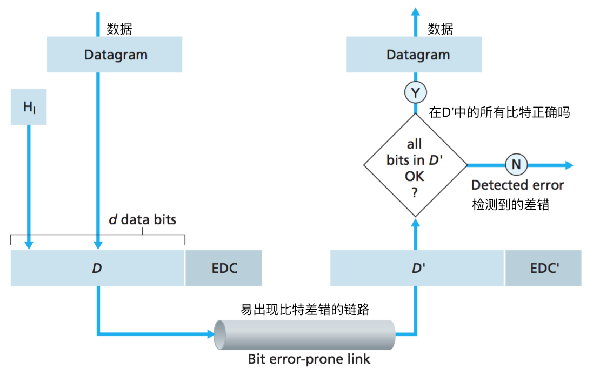
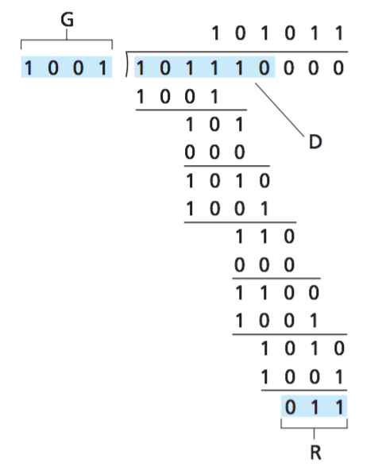
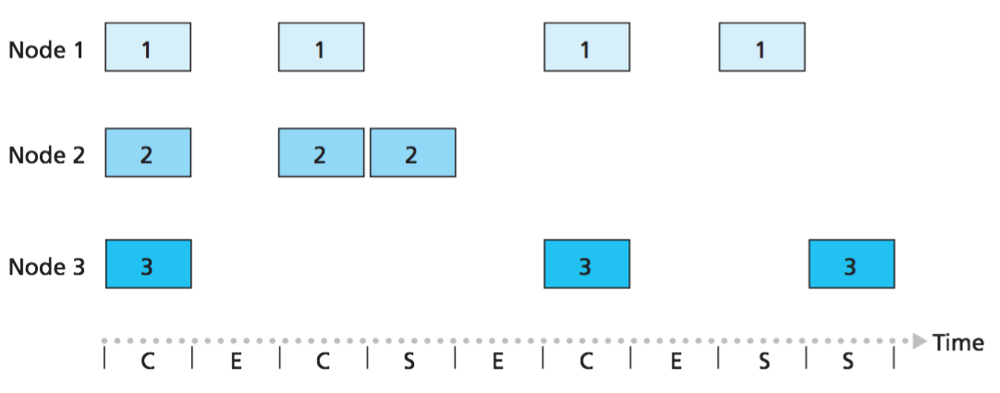
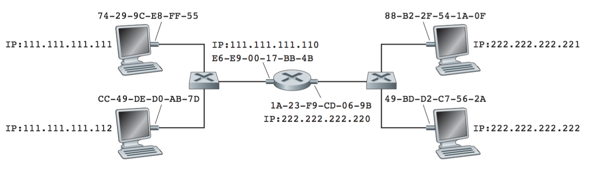
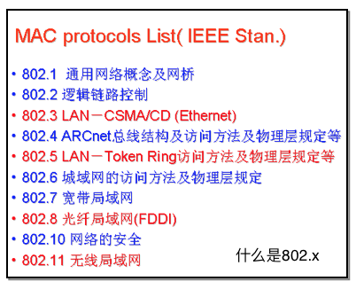

计算机网络笔记05 链路层
5.1 链路层概述
- 基本概念:
- 主机和路由器：结点
- 相邻结点的通信信道：链路 eg.wired links, wireless links, LANs
- 链路层的数据分组
- 帧
frame: 封装网络层的数据报 - 链路层的背景
- 在不同的链路当中使用不同的协议来传输数据报:e.g.,
第一个链路以太网Ethernet，第二个链路是帧中继网络，第三个网络是802.11 - 不同的链路提供的服务也不同
链路层的服务
- 成帧, 链路接入:
- 将数据报封装成帧, 加上首部和尾部字段
- 多路访问(接入)
- “MAC” 地址用于标识发送结点和接收节点
- 相邻结点间的可靠传输：
- 保证无差错地经链路层移动每个网络层数据报
- 在错误率低的链路中(光纤,某类双绞线)中不需提供，而无线链路:具有较高的错误率
- 流控制: 匹配相邻结点的 (发送/接收)速度
- 差错检验:
- 由信号衰减、噪声等产生差错
- 接收结点需要检测是否出现bit差错: 丢弃错误帧，告知发送结点重传(可选)
- 差错恢复（可选）: 接收结点可以发现并修复bit差错，不需发送结点进行重传
- 半 / 全双工: 半双工指结点不能在发送的时候同时接收数据
链路层协议在何处实现
- (most)在每个主机上(硬件)：链路层协议在
网络适配器/网络接口卡上部署 - a.k.a. network interface card NIC
Ethernet card, PCMCI card, 802.11 (wifi) card - 通过系统总线接入系统
- 适配器上还包括物理层协议
- (少数)在运行于主机CPU上的软件中实现
链路层是软件、硬件的结合体，即此处是协议栈中软件与硬件交接的地方
5.2 差错检验和纠正
- EDC = 差错检验和纠正比特(redundancy)
- D = 数据, 保护首部信息
- 差错检验并不是100% 可靠，也有可能出现未检出比特差错
奇偶校验
单个奇偶校验位: 检测单个bit差错(当差错“突发”式聚集，偶数个/奇数个bit差错)
二维奇偶校验: 检测和恢复单个比特差错
检验和方法
目标: 检测数据分组的差错(传输层)
发送方:把报文段分成16bit的整数序列
检验和: 16bit的整数序列求和
将检验和封装到TCP/UDP首部
接收方:计算接收报文段的检验和
与首部中的检验和字段进行比对:不同 - > error detected 相同 - > no error detected.
与链路层使用CRC相比，提供相对较弱的差错保护。
因为运输层的差错检验用软件实现，采取简单而快速的方法
而链路层的差错检验在适配器中用专用的硬件实现，能够快速执行更复杂的CRC操作
检验和比对结果相同是不是绝对没出错？
循环冗余检测
- 将数据分组D看作一个二进制整数
- 双方协商一个r+1的生成多项式，G
- G的最高比特位为1
- 目标: 选择长度为r的附加比特, R, 使得
- 用 <D,R> 对G进行模2除法
- 接收方也知道 G, 用 <D,R> 除以G.
- 如果余数不为零: error detected!
- 可以检测小于r+1个比特的差错
- 广泛应用于多种链路协议(Ethernet, 802.11 WiFi, ATM)
- 其他用途：CRC32: 压缩文件检验 / CRC 可作为hash函数 
5.3 多址访问协议
两种类型的“链路”:
- 点对点链路：链路一端的单个发送方和另一端的单个接收方
eg.PPP：拨号接入HDLC：高级数据链路控制 - 广播链路：(共享链路和物理媒介)
eg.Ethernet：以太网802.11 wireless LAN：wifi无线局域网
多址访问协议
- 只有一个信道，供多对通信实体访问
- 两个以上的并发通信: 干扰
- 碰撞：如果同一时刻两个以上的结点同时发送信息 (信号纠缠在一起，发送的数据帧都会出错(丢失))
- 分布式的算法
- 结点怎么共享链路，如：确定哪个结点在什么时候可以发送数据
- 结点之间的协同也使用相同的链路，没有“带外信道”进行协同
理想的多路访问协议
设广播信道的带宽为R bps
- 当结点需要传输数据, 它可以充分利用带宽R.
- 当M个结点需要传输数据, 每个结点可以平均使用带宽 R/M
- 完全分布式控制:
不需要特殊的结点来协调(不需要主持人)
不需要时钟同步、划分时隙 - 简单、易于实现
多址访问协议：分类
- 信道划分协议
- 将信道划分为小的分片 “pieces” (时隙, 频段, 编码)
- 将每个信道分片分配给特定的用途，“各行其道，避免撞车”
- 随机访问协议：信道不进行划分, 允许产生碰撞，重点是怎么从碰撞中“恢复”
- 轮流协议：结点按次序轮流传送数据
信道划分多址访问协议
TDMA: 分时多址访问
- 按照时间的“回合”来访问链路
- 每个结点分配固定长度的时间间隙(time slot)
(length = pkt trans time) in each round - 没有发送数据的时隙就空闲起(是一种浪费)
FDMA: 分频多址访问
- 信道根据频谱划分成若干个频段
- 每个结点使用固定的频段
- 不发送数据的结点所在的频段空闲
CDMA: 码分多址访问
为每个接入的结点分配一种不同的编码。如果精心挑选这些编码，CDMA具有不同的结点能够同时传输的性质。
类似：很多人之间使用不同的语言交流。
随机多址访问协议
- 当结点需要发送数据时: 利用链路的全带宽来发送数据，不需要结点之间事先协调
- 两个以上的结点传输 ➜ 产生“碰撞”
- 随机多址访问协议将规约: 怎样检测碰撞，怎样从碰撞中恢复 (e.g., 延迟一下传输)
- 随机多址访问协议的案例: 时隙ALOHA, ALOHA, CSMA, CSMA/CD, CSMA/CA
时隙ALOHA
- 假设:
- 所有帧的长度相同: L
- 划分成等长的时隙: t
时隙为传输1个帧的时间, t= L/R - 结点只能在时隙开始时传输帧
- 结点必须保持时钟同步
- 如果两个结点在一个时隙内传数据，所有结点都可以检测到碰撞
- 操作:当结点准备传输一个帧
- 如果没有碰撞: 结点就在下一个时隙传输该帧
- 如果产生碰撞: 结点就以概率p重传帧直到成功传输完该帧
- 时隙ALOHA是高度分散的，因为每个节点检测碰撞并独立决定何时重传。 
| 优点 | 缺点 |
|---|---|
| 单个活动结点:可充分利用带宽(相比TDMA) | 碰撞后要等待, 浪费时隙 |
| 分布式 | 空闲时隙 |
| 简单 | 结点需要快速检测出碰撞、时钟同步 |
纯ALOHA
- 非时隙Aloha: 更简单, 不需要时钟同步
- 当帧封装好，待发送时：马上发送该帧(不需要等待到时隙的开始)
- 增加了碰撞的概率:
如下图：t0时刻发送的帧与其他时刻发送的帧产生了碰撞
CSMA (载波监听多址访问)
- 传输之前先监听信道:
- 如果信道空闲: 传输整个帧
- 如果信道忙碌, 推迟发送帧
- 监听，仍然会产生碰撞: 信道传输时延产生“异步”
- 碰撞: 整个数据帧就会丢失(可惜)
- 注意: 距离和传播时延对碰撞检测的作用
CSMA/CD (具有碰撞检测的CSMA)
- 载波监听/碰撞检测
- 在较短的时间检测到碰撞，并终止碰撞的传输，避免信道的浪费。
- 碰撞检测功能:
- 在有线网络中容易实现: 比较发送和接收信号
- 在无线网络中难以检测: 接收信号衰减严重
CSMA/CD 算法描述
- 网卡接收到网络层的数据报，封装成帧
- 如果网卡检测到信道是空闲的, 则开始传输帧；如果信道是繁忙的, 则等到信道空闲后再传输.
- 如果网卡在传输帧的整个过程中没有检测到其他帧的传输, 则网卡成功传输该帧；
- 如果网卡检测到其他帧的传输，则取消发送该帧，并发送一个拥堵信号(jam signal)
- 取消之后, 网卡等待一个随机时间量，然后返回步骤2 (二进制指数回退):
发生m次碰撞, 网卡从{0,1,2, …, 2m-1}中随机选择一个数K, 等待 K·512 比特时间后返回步骤2
什么是
比特时间？
如1Gbps，每比特时间是10-9s，若K=1023，则等待时间 t = 1023* 512 *10-9= 50 μs
轮流多址访问协议
- 信道划分多址访问协议:
- 在负荷高的时候：信道利用率、公平性等都比较好
- 在负荷低的时候：信道访问的产生时延(空闲时隙)，哪怕只有1个活动结点，链路的利用率也只有1/N!
- 随机多址访问协议
- 负荷低的时候：效率高，单个结点可以利用整个带宽
- 负荷高的时候：经常发送碰撞
- “轮流” 协议
- 无论负荷高还是低，都可以有效利用网络
轮询 Polling
- 主结点按次序“邀请” 从发送数据
- 主要用于 “哑终端”
- 存在的问题: 引入轮询时延, 单点故障 (master)
令牌传递协议 Token-passing
- 按照次序传递令牌: 得到令牌的结点可以传数据.
- 一个称为
令牌的小的特殊帧在节点之间以某种固定次序进行交换 - 存在的问题: 令牌开销，单点故障(token)
多址访问协议总结
- 信道划分：分时, 分频
- 随机访问 (dynamic),
- ALOHA, S-ALOHA, CSMA, CSMA/CD
- 载波监听: easy in some technologies (wire), hard in others (wireless)
- CSMA/CD used in Ethernet
- CSMA/CA used in 802.11
- 轮流访问
- polling, token passing
- Bluetooth, FDDI, IBM Token Ring
5.4 局域交换网
链路层寻址和地址解析协议
链路层编址
- MAC地址(LAN地址/物理地址)：烧写在网卡的ROM中
- 功能：
- 给每一个网络接口编的地址
- 在局域网内工作
- 将数据帧从一个网络接口传输到物理连接的另外一个网络接口
- 6字节/48bit MAC地址(-分16进制)，如：1A-2F-BB-76-09-AD，共有**248**个可能的MAC地址
- MAC 地址 vs IP地址
- 工作在不同的协议层次
- IP地址是在广域网/互联网中寻址
- IP地址可以动态改变，MAC地址一般是固定的(也不会重复)
- IP地址是层次结构，MAC地址是扁平结构
- 分配MAC地址？
- IEEE (国际电气和电子工程师协会)：设备生产商向IEEE购买MAC地址段
地址解析协议: ARP
- 每个IP结点(主机或路由器端口)，在链路层有一个ARP表
< IP address; MAC address; TTL>
A想给B发送数据报，且B的MAC地址不在A的ARP表中
——A通过链路广播来发送查询分组(帧)
- 广播的目的MAC地址：FF-FF-FF-FF-FF-FF
- who has IP address x.x.x.x，
- tell a.a.a.a (A’s IP地址)
- 局域网内的所有主机都会收到这个广播的查询帧
- B收到这个APR查询后，向A回应自己的MAC地址
- B封装一个响应数据帧，发送到A的MAC地址
- 这次是单播，不是广播
- A收到B的响应之后，将它存入ARP表中
- APR是“即插即用”的协议: 结点自主创建/更新ARP表，不需网络管理员干预
跨子网的地址解析
如何穿过路由器
设：A知道B的IP地址，A知道路由器的IP地址/MAC地址(如何知道？)
- A创建IP数据报(源IPA, 目的IPB)
- A创建链路帧(源MAC**A, 目的MACR1**)
- 数据帧从A到达R，R解析数据帧，提交到IP层
- R封装数据帧(源MAC**R2, 目的MACB**)
- R将IP数据报向B的子网转发
- B收到数据帧，并解析数据帧并向上层提交数据报
以太网
- 有线局域网
- 以太网：802.3 CDMA/CD
- 令牌环网：802.5
- 无线局域网
- wifi: 802.11 CSMA/CA
- … 802.15 
- 以太网是最典型的局域网
- 以太网是局域网技术的主流
- 网络接口(网卡)造价低廉
- 简单(相比于令牌网和ATM)
- 速度不断升级: 10 Mbps – 10 Gbps
以太网帧结构

- 前同步码: 共8个字节
- 前七个字节都为：10101010, 最后一个字节为：10101011
- 用于发送方和接收方的时钟同步
- MAC地址: 共12个字节，目的地址和源地址各6个字节
- 接收方的网卡收到帧，如果目的地址是自己的MAC地址或者目的地址是广播地址，则解析该帧并向网络层提交；否则丢弃该帧。
- 类型: 2个字节，
- 标识封装上层协议的类别，可能是IP数据报 / APR数据分组 / 其他链路层数据分组
- CRC: 4字节(32bit) 循环冗余检测码
以太网提供的服务
- 无连接服务：发送方和接收方不需要事先握手
- 不可靠的通信
- 链路层的接收方不会给发送方确认(ACK/NAK都不发送)
- 存在问题：帧出错/丢失了怎么办？
- 尽最大努力交付
- 碰撞后：二进制指数回退
以太网标准系列
- 802.3
- 相同的MAC协议(CSMA/CD)和帧结构
- 不同的物理层
- 不同的传输速度：2Mbps/10Mbps/100Mbps/1Gbps/10Gbps
- 不同的物理媒体：光纤、同轴电缆、双绞线
链路层交换机
以太网的拓扑结构
- 总线结构(1990s): 所有的结点都在一个碰撞域(和其他结点都可能碰撞)
- 星型结构(当今主流): 通过交换机进行局域网连接，碰撞域隔离：结点不相互碰撞
链路层交换机
- 工作在链路层的网络设备
- 作用：
- 存储、转发以太网帧
- 检测帧的目标MAC地址，选择性地发送到1个或多个输出链路
- 透明的：主机观测不到交换机的存在(交换机的接口没有MAC地址)
- 即插即用、自学习：交换机不需要配置
- “交换”的含义：A-A’ 和 B-B’可以并行传输，不会碰撞
- 如何进行转发? 交换机(/转发)表 < interfacem, MACx , TTL >
- 如何生成转发表？
自学习机制 - 双工，任何交换机接口能够同时发送和接收
- 性质
- 消除碰撞：交换机的缓存帧绝不会在网段伤同时传输多于一个帧
- 异质的连接：交换机将链路彼此隔离，因此局域网的不同链路能够以不同速率运行且能够在不同媒体上运行
- 管理：提供强化的安全性，并且易于管理。
| 交换机 | 路由器 | |
|---|---|---|
| 存储转发 | 链路层设备 | 网络层设备 |
| 转发表 | 自学习 | 路由选择算法 |
| 适用于 | 小网络：几个局域网网段 | 几千台主机组成的更大网络 |
虚拟局域网
- 动机
- 出于网络管理的需要: 将局域网分成更多的组，更方便地管理用户
- 流量隔离: ARP/DHCP广播, 自学习产生flood
- 网络安全/隐私的考虑
- 手段: 使用支持VLAN的交换机
- “三层”交换机: 带路由(工作在网络层、第三层)功能的交换机；使得单个交换机能够物理隔离出多个“子网”
- 多个交换机进行VLANs: 对以太网帧封装格式进行扩展：802.1Q, 增加了VLAN标签字段
一次Web请求所要做的工作
- 物理连接：WLAN(802.3) or WIFI(802.11)
- 配置主机IP等参数
- 手工配置
- 动态主机配置：DHCP
1 | (1) DHCP Request APP layer：DHCP Message UDP封装：Sport 68 Dport 67 Checksum IP封装：SIP：0.0.0.0 |
(8) 客户机DNS请求
APP Layer：DNS报文
服务器的主机名
查询类别：-type=a
UDP封装：Sport bobport Dport 53
IP封装：SIP: bob的IP DIP: DNS Sever
Framing
问题来了：DMAC? 网关的MAC地址是多少？
(9) 需要知道网关的MAC
(10) ARP查询
客户机网卡
封装ARP查询报文“Who has 网关IP，Tell Bob”
Framing
DMAC：FF-FF-FF-FF-FF-FF
SMAC：bb-bb-bb-bb-bb-bb
(11) ARP响应网关接口
封装ARP响应报文
Framing
DMAC：bb-bb-bb-bb-bb-bb
SMAC：网关的MAC
(12) 客户机获得网关的MAC
(13) Framing
DMAC: 刚刚从ARP查询得知
SMAC: bb-bb-bb-bb-bb-bb1
2- 路由选择到DNS服务器 ``` (14) DNS查询到达网关路由器 - 存储 - 转发：通过转发表来确定输出链路 (15) Comcast网络边界路由器们 - 存储 - 转发：通过转发表来确定输出链路 (16) DNS Server收到查询报文 - DNS缓存中没有记录 - 向上级DNS迭代查新 - DNS缓存中有记录 - 封装DNS回答报文, 通过网络交付
(17)Bob便携机从DNS报文中抽取出服务器的IP地址Web客户-服务器交互：TCP和HTTP
(18) HTTP和TCP的合作：套接字
- 浏览器创建Socket (四元组标识)
- Sport：浏览器随机生成; Dport：80
- SIP：Bob的IP; DIP：Google WWW的IP(刚刚通过DNS查询到)
- TCP三次握手开始, 客户端发送TCP SYN请求
(19) 路由转发…
(20) 服务器对连接请求做出响应 TCP SYN ACK
(21) 客户机收到SYN ACK --套接字创建成功！！
(22) HTTP请求 --HTTP GET报文
(23) 报文进入套接字
- TCP封装
- 端口号
- 序号
- 确认号
……
(23) HTTP响应
- Sever读取HTTP请求
- 找到Web对象
- 封装HTTP响应
- 发送到TCP套接字中
(24) Bob终于收到了报文！